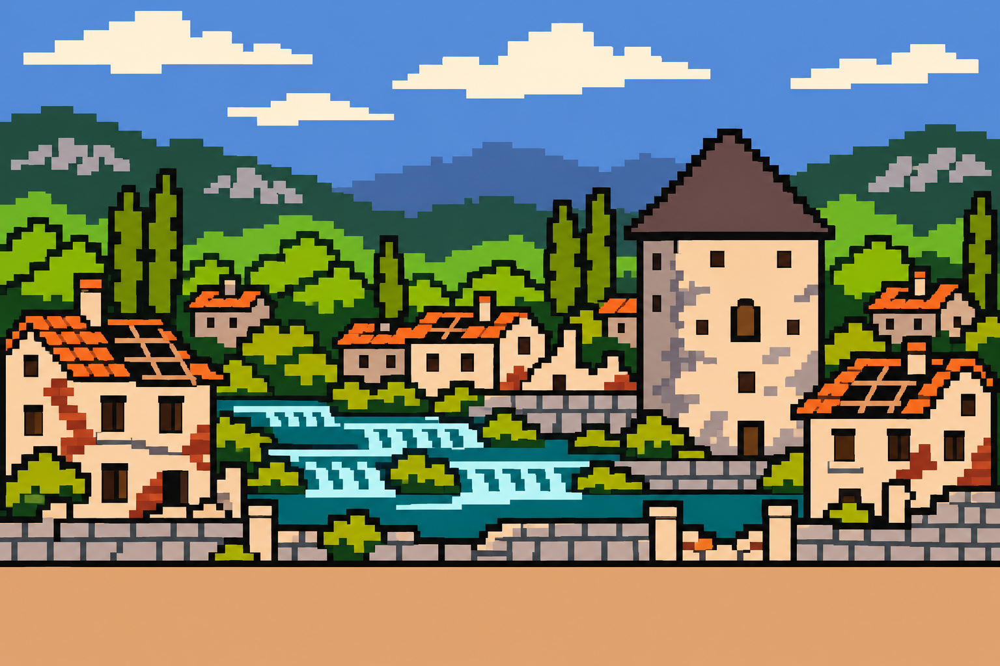
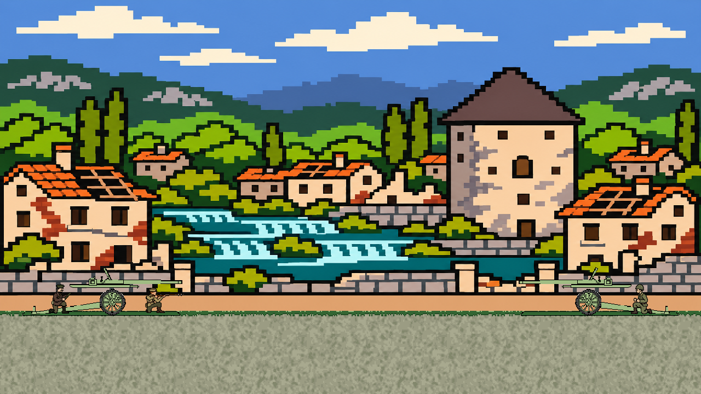
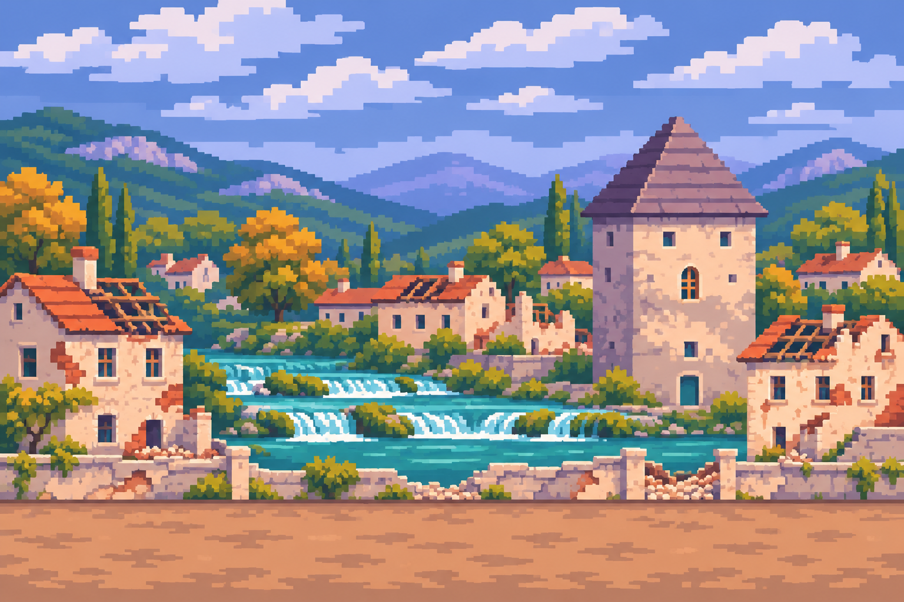
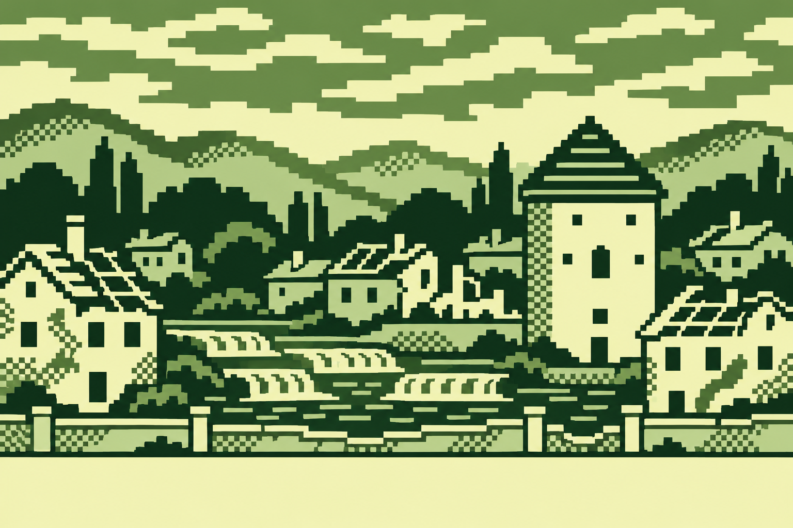
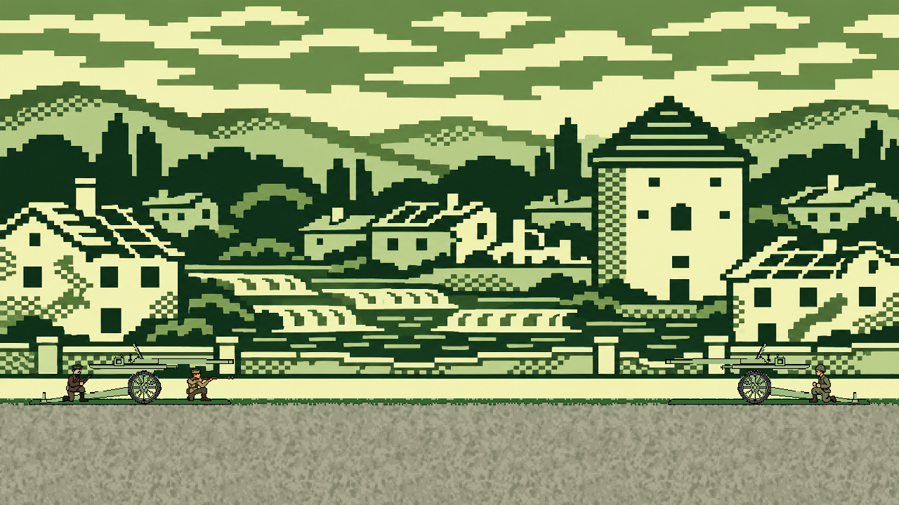

A · 8-bit arkadni
Krupne pločice, tamni obrubi, jednostavne senke i uža paleta.


Najnovija razrada · ljudi i mali ratni prizori
Dorada druge probe · partizanska ratna atmosfera
Ovo su stilske probe Bihaća, bez izbora konačnog pravca. Prethodne slike su sačuvane; igra i browser nisu pokretani.
Krupne pločice, tamni obrubi, jednostavne senke i uža paleta.


Organske grupe piksela, više boja i senčenje odvojenim površinama.


Veoma niska rezolucija, snažne siluete i šrafura od piksela.

